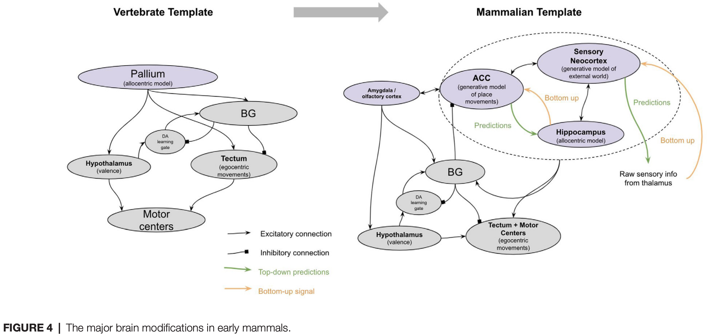
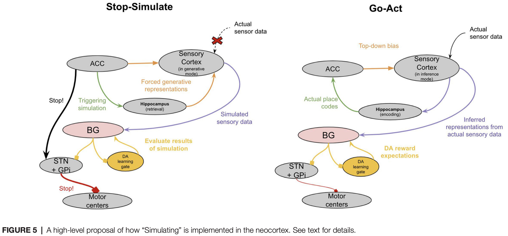

2 2021 Brain Evolution
-
Five Breakthroughs: A First Approximation of Brain Evolution From Early Bilaterians to Humans
-
Retracing the evolutionary steps by which human brains evolved can offer insights into the underlying mechanisms of human brain function as well as the phylogenetic origin of various features of human behavior.
- To this end, this article presents a model for interpreting the physical and behavioral modifications throughout major milestones in human brain evolution.
- This model introduces the concept of a “breakthrough” as a useful tool for interpreting suites of brain modifications and the various adaptive behaviors these modifications enabled.
- This offers a unique view into the ordered steps by which human brains evolved and suggests several unique hypotheses on the mechanisms of human brain function.
INTRODUCTION
-
Humans have an incredibly diverse suite of intellectual faculties as well as incredibly complicated brains.
- But all these varied faculties and brain structures are likely to have evolved from simpler prototypes in the simpler brains of our ancestors.
- This general idea of progressive complexification of behavior and brains from simpler roots has been elegantly articulated in Paul Cisek's theory of "phylogenetic refinement," whereby behaviors and brain structures are interpreted as the consequence of evolutionary refinement from more basic building blocks (Cisek, 2019).
- An essential aspect of this research paradigm is chronicling the specific brain modifications that occurred in the human lineage, and what specific behavioral modifications they enabled.
-
Much work has been done to chronicle the specific brain modifications that occurred along major milestones in the human lineage from early bilaterians to extant (现存) humans (Kaas, 2009; Striedter and Northcutt, 2020).
- Work has also been done to reconstruct the adaptive behavioral abilities that emerged along major milestones in the human lineage from early bilaterians to extant humans (Murray et al., 2017; Cisek, 2019; Ginsburg and Jablonka, 2019; Bennett, 2021).
- A challenge of this research paradigm is how numerous the brain and behavioral modifications have been throughout evolution.
- The aim of this article is to introduce the concept of a "breakthrough" and use this concept to offer a first approximation explanation of a multitude of both brain and behavioral modifications that occurred during major evolutionary milestones.
- The general structure of the argument herein is that at each major milestone in human brain evolution, many neural modifications can be explained as having enabled a new single breakthrough, which was thereby applied in many adaptive ways.
An Analogy to Technological Innovation: The Useful Concept of a “Breakthrough”

-
To elaborate on this idea, I will draw on an analogy to technological innovation.
- Consider the modifications and applications of a technological breakthrough such as the transition from gas-powered to electrically-powered households during the late 19th century.
- The physical modifications within a household were many: cables were laid, switches were added, circuit boards were installed. But all these new physical modifications can be reasonably understood through the lens of a single new breakthrough capability that they enabled — namely the capability of using electricity for energy.
- And this breakthrough capability was thereby applied in many adaptive ways: lighting a home at night for reading, heating a house during the cold without fire, speaking to faraway family members (using a telephone).
- The value of the physical modifications is defined only in the context of these adaptive applications.
-
Now imagine you were an alien observer trying to "explain" the observed physical changes to the 19th century home, as well as the observed new adaptive abilities of 19th century homeowners.
- Without a notion of the underlying breakthrough (electricity), and instead only with a model of the adaptive abilities and the physical modifications themselves, explaining the transformation of the 19th century home would be more perplexing (复杂的).
- If you tried to explain individual physical modifications through the adaptive value they provided, it would be unclear: what was the specific adaptive value of a single light switch or a single wire?
- Conversely, if you tried to find the "substrates" underlying a given new "ability," such as reading at night, the answer would also be unclear: entire suites of physical modifications worked together to enable these abilities. There was no single substrate.
- Further, many of the substrates of seemingly completely different newfound abilities are highly overlapping: reading at night, heating your home during the cold, and communicating at a distance all used overlapping physical features within a home (all used common cords, switches, and circuit breakers).
- In contrast, armed with the concept of a breakthrough, both the new physical modifications and the seemingly different new abilities have a much more interpretable first approximation: the varied physical modifications together served the single purpose of using electricity for energy, and this single breakthrough was applied in many different ways, including reading at night and communicating at a distance.
- Without a notion of the underlying breakthrough (electricity), and instead only with a model of the adaptive abilities and the physical modifications themselves, explaining the transformation of the 19th century home would be more perplexing (复杂的).
-
An additional benefit of the concept of a breakthrough is that it incorporates prior constraints into subsequent physical modifications and newfound abilities.
- Consider a technological breakthrough that occurred after that of electricity: the television (TV).
- Can we understand the modifications and breakthroughs of TV without first understanding that of electricity?
- TV was only possible because electricity came first and the ways in which electricity worked imposed constraints on how TVs would have to work.
- For example, TVs had to work on the relatively low voltage available within the home at the time. As such, we can only "explain" the specific modifications of TVs when we understand the constraints of the breakthrough that came before.
-
In sum, there are two useful benefits of the concept of a breakthrough.
- The first is that it enables a useful first approximation of both physical modifications and the adaptive value they provide.
- The second is it provides a simple interpretation of ordered constraints, whereby prior breakthroughs imposed important constraints on future breakthroughs.
- The analogy is far from perfect.
- For example, numerous technological modifications to a home can be planned in advance, whereas evolution can only work via tinkering over each evolutionary iteration.
- Regardless, this analogy is illustrative — it offers an instructive lens for the concept of a breakthrough and the useful benefits it offers in explaining transformations (see Figure 1).
- This article is an attempt to apply this concept of ordered breakthroughs to brain evolution in order to offer explanations of the major brain and behavioral modifications throughout the evolutionary lineage from bilaterians to extant humans.
The Approach
-
In the context of brain evolution, I will define three key terms:
- Physical Modifications: the actual physical changes in underlying neural structures.
- Breakthrough: a new capability that these numerous physical changes enabled, and which had numerous adaptive behavioral applications.
- Adaptive Applications: a new behavioral ability that offered survival and/or reproductive benefit to an animal and is one of many applications of an underlying breakthrough capability.
-
Below I will chronicle what I propose are the five major breakthroughs that occurred from the first bilaterians to the first human brains.
- There are undeniably many more modifications than will be described below, however, I argue that a remarkably broad set of brain functions and behaviors across taxa throughout the human lineage can be understood through the lens of only these five major modifications.
- I will connect these major modifications to likely behavioral abilities that emerged throughout our evolutionary timelines.
- This simplified model of brain evolution provides a useful "first approximation" of how and why brains evolved.
-
I intentionally call this a "model" and not a "theory."
- I make the following distinction between the two:
- a model is a useful approximation of a set of phenomena,
- whereas a theory is a comprehensive explanation of a set of phenomena (Wunsch, 1994).
- Through this lens then, this article does not present a theory, as it is undeniably a simplification of the process of brain evolution.
- Instead, what it presents is a model — a useful first approximation that can be used to interpret and explain a multitude of observations.
- I make the following distinction between the two:
-
Further, the scope of this article is intentionally anthropocentric (以人类为中心) — it seeks to chronicle the phylogenetic history of behavioral abilities in the human lineage between early bilaterians and extant humans.
- This requires an essential caveat (警告) to the hypotheses presented herein.
- Proposing a hypothesis regarding the emergence of abilities along the evolutionary lineage from early bilaterians to humans is not the same thing as proposing a hypothesis regarding a unique ability of humans relative to other extant animals alive today.
- For example, the hypothesis that episodic memory emerged in early mammals is not the same as a hypothesis that only mammals exhibit episodic memory.
- Convergent evolution is not the exception, but the rule.
-
I will start by presenting the model and then provide evidence for the model.
THE MODEL
1 Associative Learning: Steering (转向) in Early Bilaterians (两侧对称动物)
-
The hypothesis here is that the major neural modifications that emerged in early bilaterians facilitated the breakthrough of "steering," which was thereby applied in multiple adaptive ways, such as in
- local area restricted search,
- avoiding predation (捕食),
- and maintaining homeostasis (体内动态平衡).
-
By "steering" I refer to the capability of categorizing external stimuli into two simple groups
- positive valence (for approach)
- and negative valence (for escape).
-
Agents can then turn towards directions where "positive valence" stimuli increase in potency (效力) (or "negative valence" stimuli decrease) and turn away from directions where "positive valence" stimuli decrease in potency (or "negative valence" stimuli increase).
-
It is a breakthrough in the sense that an agent can navigate a complex environment remarkably well with only these simple categorizations and turning decisions.
- This navigational strategy is often called "taxis (趋向性) navigation," whereby organisms move towards or away from specific stimuli and thereby climb up or down sensory gradients.
- Taxis navigation is present in single-celled organisms and almost definitely existed far before the first bilaterians. However, this model proposes that it was only in the first bilaterian animals where taxis navigation was implemented with neurons and muscles, and this unique implementation offered several additional benefits.
-
This model proposes that there were four physical modifications in early bilaterians:
- a bilateral body plan,
- valence sensory neurons that connected to global neural integration centers (the first "brain"),
- neurobiological mechanisms of associative plasticity,
- and neuromodulatory systems that generated persistent behavioral states.
-
An interpretation of how these neural structures together implemented "steering" is as follows.
- A bilateral body plan reduced navigational decision making to simply forward or backward, and left or right (Holló and Novák, 2012).
- The sensory neurons of early bilaterians were evolutionarily hardwired to categorize specific external stimuli into those for "approaching" (forward) and others for "avoiding" (turn).
- These sensory neurons were directly sensitive to internal states.
- A chemosensory neuron in early Bilateria that was responsive to food cues would then also be directly modulated by hunger signals.
- In this way, the sensory apparatus of early bilaterians would have directly computed valence.
- Further, the global neural integration centers of early bilaterians would have been used to integrate competing input across valence neurons, which would have enabled the selection of a single cross-model decision in the presence of tradeoffs.
- For example, if an early bilaterian animal detected both the increase in a food cue (positive valence) and an increase in heat (negative valence), these different valence neurons would project to common interneurons where they could be integrated into a single decision of forward locomotion or turning depending on the relative strength of each valence response.
- The mechanisms of associative plasticity, both postsynaptic and presynaptic, enabled early bilaterians to change the weights and hence valence of various stimuli.
- For example, experiencing pain in the presence of light could make light more aversive in the future.
- This enabled smarter steering decisions over time.
- This model proposes that it was in these early bilaterians in whom neuromodulators such as dopamine and norepinephrine (去甲肾上腺素) (and octopamine (章鱼胺)) were first used for valence-related signaling.
- Dopamine was released in the presence of food cues and persisted in extra synaptic space even after food cues disappeared. This enabled an animal to perform local area restricted search even in the absence of any specific food cues.
- Octopamine and norepinephrine did the same for negative valence stimuli, driving an animal to continue its relocation locomotion even after negative stimuli faded.
-
Together, these physical modifications enabled the breakthrough of "steering," which enabled early bilaterians to optimally explore and exploit food patches while maintaining homeostasis.
- This implementation of taxis-navigation within neurons and muscles may have enabled comparably larger organisms to use taxis navigation than the prior taxis mechanisms of cellular cilia.
- Further, such a neuron implementation may have enabled more accurate sensitivity to internal states and cross-modal integration.
- This breakthrough was only possible because bilaterian brains were built on the foundation of neurons and muscles that evolved prior in eumetazoans (真后生动物).
2 Model-Free RL: Reinforcing in Early Vertebrates (脊椎动物)
-
The hypothesis here is that the brain modifications that emerged in early vertebrates facilitated the singular breakthrough of "reinforcing," which was thereby applied in multiple adaptive ways, such as in
- map-based navigation,
- interval timing,
- and omission learning.
-
By "reinforcing" I refer to "model-free reinforcement learning".
- In reinforcement learning, a distinction is often made between "model-free" and "model-based" methods.
- In simple terms, model-based methods include the ability to "plan," which requires an agent to "play out actions" before taking them and choosing the sequence of actions that has the best outcome.
- This "playing out" of actions thereby requires a "model" of state transition probabilities.
- In contrast, model-free methods include only learning the direct association with the current state and the available actions.
-
The hypothesis here is that this "model-free" method of learning first emerged in early vertebrates, while the "model-based" method emerged later with the first mammals.
-
Model-free reinforcement learning requires several features:
- recognition of states,
- predicting the magnitude of reward,
- predicting the timing of reward,
- temporal difference error signal,
- and the use of this error signal to update reward predictions.
-
Despite these shared features, there are still many different implementations and conceptualizations of model-free reinforcement learning and how it manifests in brains. As such, two clarifications must be made regarding the features of model-free reinforcement learning this hypothesis proposes emerged in early vertebrates.
- The first clarification is regarding spatial maps.
- Model-based RL and spatial maps (sometimes called cognitive maps) are two concepts that sometimes get conflated (合并的) — it has been suggested that evidence for the presence of a spatial map in an animal, as evaluated by various map-based navigational tests, is evidence for the presence of model-based reinforcement learning.
- The reasoning being that a spatial map requires a "model" of space.
- However, what makes an agent’s learning method model-based is not the presence of a spatial map but the use of that spatial map for the purpose of simulating future actions.
- A spatial map can still be used in the context of model-free learning without such simulation of future actions.
- For example, an agent’s current state can be defined as a location in space, and the actions it associates rewards with can be defined by the next target locations, which thereby would generate a homing vector from the current location to the next target location. This contains no "playing out" of state transition probabilities, but does have various adaptive properties, such as being robust to small changes in starting locations or paths (such as due to perturbations in water current).
- The hypothesis here proposes that spatial maps first emerged in vertebrates but they were not used for simulating future actions, and only used for learning associations between the current location and rewarding next target locations (see Figure 2).
- The second clarification is regarding goal-directed vs. habitual behavior.
- Model-based learning and the ability to use reward identity in learning are sometimes conflated: it has been suggested that the presence of successful devaluation is evidence for the presence of model-based reinforcement learning.
- I will argue that this is not the case.
- A common experimental setup for such devaluation experiments is to allow a mouse to associate two levers each with a different type of food. Once this association is well learned, mice are allowed to eat one of those foods to satiation (饱腹感).
- When subsequently presented with each of these levers, mice will usually immediately favor the lever that produces the food that was not eaten to satiation (i.e., not devalued).
- Different experimental setups, as well as lesions of specific regions, can make mice insensitive to devaluation, whereby they will continue pushing the lever for the devalued food.
- Such behavior is typically considered to be "habitual" whereas that which is sensitive to devaluation is considered "goal-directed".
- Habitual behavior at times is conflated with model-free learning: habitual behavior demonstrates direct stimulus-response associations, which can seem analogous to direct learning of rewarding actions from a given state in model-free learning.
- And similarly, goal-directed behavior clearly requires a "stimulus-stimulus" association, where each lever is associated with the food itself, and not just the original reward — this has been suggested to be evidence of model-based learning.
- However, neither is necessarily the case. If "states" include interoceptive (内感受性的) information such as hunger level, then model-free learning can exhibit behavior that is sensitive to devaluation without any planning or playing out of future actions.
- Therefore, the proposal that early vertebrates were capable of model-free RL but not model-based RL does not suggest that all behavior of early vertebrates was habitual and insensitive to devaluation.
- The first clarification is regarding spatial maps.

-
The main four new brain structures that emerged with early vertebrates were
- the pallium (大脑皮层),
- the basal ganglia (BG) (基底神经节),
- the tectum (顶盖),
- and the cerebellum (小脑) (Sugahara et al., 2017).
-
This entire network of new brain structures of early vertebrates can be reasonably understood through the lens of the emergence of model-free reinforcement learning with spatial maps and timing.

-
Study Note: Bilaterian Associative Learning
- Core Principle:
- Invertebrate associative learning does not follow the classical Hebbian rule ("Neurons that fire together, wire together"). It is a three-factor heterosynaptic mechanism where synaptic strengthening is strictly gated by a valence-encoded neuromodulator, completely independent of the firing state of the post-synaptic motor neuron.
- Step 1: Initial State (Pre-Training)
- The Hard-Wired Circuit: The Unconditioned Stimulus (US, e.g., food) has an innate, strong connection to the Motor Neuron, automatically driving behavioral output. It also connects directly to a valence-encoding Interneuron (e.g., the "Yellow" neuron).
- The Weak Link: The Conditioned Stimulus (CS, e.g., odor) connects to the Motor Neuron via an extremely weak synapse (\(W_{\text{CS} \rightarrow \text{Motor}}\)).
- Result: Presenting the CS alone cannot trigger the Motor Neuron because the signal fails to pass through the weak synapse.
- Step 2: Coincidence Detection (During Training)
- When the CS (odor) and US (food) are presented simultaneously, two independent pathways converge at the \(W_{\text{CS} \rightarrow \text{Motor}}\) synapse:
- Presynaptic Activity (CS): The CS neuron depolarizes, releasing classical neurotransmitters (e.g., glutamate) into the synaptic cleft. These molecules sit ready at the post-synaptic receptors.
- Neuromodulatory Volley (US): Concurrently, the US neuron activates the Yellow Interneuron, which floods the local synaptic environment with a neuromodulator (e.g., octopamine).
- When the CS (odor) and US (food) are presented simultaneously, two independent pathways converge at the \(W_{\text{CS} \rightarrow \text{Motor}}\) synapse:
- Step 3: Molecular Gating & Persistent State (The Core Mechanism)
- The synapse becomes the locus of a tripartite (three-factor) interaction:
- The Learning Gate: The neuromodulator acts as a biochemical switch by binding to G-protein coupled receptors (GPCRs) on the synapse. It only permits structural changes when the CS neurotransmitter is simultaneously present.
- Biochemical Fixation: This dual chemical presence activates an intracellular signaling cascade (\(\text{cAMP} \rightarrow \text{Protein Kinase A}\)). This pathway drives permanent structural modifications, such as inserting more post-synaptic receptors and increasing neurotransmitter release probability.
- Result: The weight of \(W_{\text{CS} \rightarrow \text{Motor}}\) is permanently upregulated from weak to strong.
- The synapse becomes the locus of a tripartite (three-factor) interaction:
- Step 4: Conditioned Reflex (Post-Training)
- Once the synaptic highway is built, the US (food) is removed.
- When the CS (odor) is presented alone, it fires neurotransmitters into the newly optimized, highly sensitive synapse.
- The amplified signal effortlessly crosses the threshold to fire the Motor Neuron, executing the learned behavior (e.g., approach) purely in response to the environmental cue.
- The "US-Motor Ablation" Proof
- If you experimentally sever the direct pathway from the US to the Motor Neuron, the Motor Neuron will remain completely silent and fail to fire during training.
- However, because the US \(\rightarrow\) Yellow Interneuron pathway remains intact, the neuromodulator is still released. Consequently, the convergence of the CS neurotransmitter and the neuromodulator at the synapse still occurs normally. Therefore, the \(W_{\text{CS} \rightarrow \text{Motor}}\) synapse will still strengthen successfully, proving that post-synaptic firing is a byproduct, not a cause, of this associative learning.
- Core Principle:
-
Study Note: Vertebrate Reinforcement Learning
- Core Principle:
- Vertebrate Reinforcement Learning does not rely on direct, rigid sensory-to-motor wiring. Instead, it is a decoupled, model-based system running an online Temporal Difference (TD) Actor-Critic algorithm. The circuit separates the prediction of "state value" from the selection of "motor actions," using phasic dopamine as a scalar algebraic error signal (\(\delta_t\)) to dynamically adjust multi-synaptic weights.
- Step 1: State Representation & Space-Time Synthesis
- When a Conditioned Stimulus (CS, e.g., a cue) appears in a complex environment, the brain does not treat it as an isolated signal. It builds a high-dimensional state vector (\(\mathbf{s}_t\)):
- Spatial Cognitive Mapping (Pallium/Cortex): The Pallium constructs an allocentric, 3D model of the environment, computing the animal's exact spatial coordinates and contextual layout.
- Interval Timing (Cerebellum & Tectum): Concurrently, the Cerebellum acts as a high-precision internal stopwatch, tracking the exact milliseconds elapsed since the onset of the CS.
- Result: A unified spatio-temporal state vector \(\mathbf{s}_t\) (encoding "Where I am" and "Exactly what millisecond it is") is dispatched to the Basal Ganglia.
- When a Conditioned Stimulus (CS, e.g., a cue) appears in a complex environment, the brain does not treat it as an isolated signal. It builds a high-dimensional state vector (\(\mathbf{s}_t\)):
- Step 2: Parallel Dual-Stream Processing (Actor vs. Critic)
- The state vector \(\mathbf{s}_t\) enters the Striatum (the input hub of the Basal Ganglia), where it splits into two completely independent, parallel anatomical pathways:
- The Critic Stream (Striatum Matrix): This pathway calculates the State-Value Function \(V(\mathbf{s}_t)\). It answers the question: "Based on this current situation and time, what is the total amount of reward I expect to receive in the future?"
- The Actor Stream (Striatum Striosome): This pathway encodes the Policy \(\pi(a|\mathbf{s}_t)\) by calculating action preferences. It decides which motor plans to prepare but keeps them under lock and key via a structural motor gate.
- The state vector \(\mathbf{s}_t\) enters the Striatum (the input hub of the Basal Ganglia), where it splits into two completely independent, parallel anatomical pathways:
-
Step 3: Computational Auditing via Dopamine (TD-RPE Calculation)
- The animal executes an action \(a_t\) sampled from its policy, shifting the world to a new state \(\mathbf{s}_{t+1}\), which might yield an Unconditioned Stimulus (US, e.g., food reward \(R_t\)).
- At this exact transition, the Midbrain Dopamine Neurons (the yellow node) act as an algebraic differentiator, calculating the Temporal Difference Reward Prediction Error (\(\delta_t\)):
\[\delta_t = R_t + \gamma V(\mathbf{s}_{t+1}) - V(\mathbf{s}_t)\]- The Dopamine Phasic Burst (\(\delta_t > 0\)): If the reward \(R_t\) is higher than expected, or if the new state looks more promising than the last, dopamine neurons fire a massive burst, flooding the Basal Ganglia with a wave of dopamine.
- The Dopamine Pause (\(\delta_t < 0\)): If an expected reward fails to materialize, dopamine neurons completely shut off, dropping local dopamine concentrations far below baseline levels.
-
Step 4: Three-Factor Credit Assignment & Synaptic Modification
- The dopamine signal \(\delta_t\) is broadcast globally across the Striatum to execute a Three-Factor Learning Rule (\(\Delta W = \eta \cdot \text{Pre} \cdot \text{Post} \cdot \delta_t\)), updating the synapses of both streams simultaneously:
- Updating the Critic: The Critic's weights are adjusted to eliminate the error, forcing future value predictions \(V(\mathbf{s}_t)\) to align perfectly with reality.
- Reshaping the Actor (Policy Optimization):
- If \(\delta_t > 0\), the dopamine burst triggers Long-Term Potentipaton (LTP) specifically at the synapses that just drove action \(a_t\). The Basal Ganglia "opens the gate" wider, making this action highly likely to occur under this specific space-time state in the future.
- If \(\delta_t < 0\) (Omission), the drop in dopamine triggers Long-Term Depression (LTD). The weights governing that failed action are actively slashed, instantly collapsing its future probability.
- The dopamine signal \(\delta_t\) is broadcast globally across the Striatum to execute a Three-Factor Learning Rule (\(\Delta W = \eta \cdot \text{Pre} \cdot \text{Post} \cdot \delta_t\)), updating the synapses of both streams simultaneously:
- Why This Architecture Resolves the "Invertebrate Limitations"
- Omission Learning (Green Check): Because the dopamine system can output a negative scalar (\(\delta_t < 0\)), it can execute mathematical subtraction on synapses. It does not wait for chemicals to slowly decay; it actively and rapidly erases bad behaviors when rewards disappear.
- Interval Timing (Green Check): Because the Cerebellum continuously stamps every millisecond into the state vector \(\mathbf{s}_t\), the Critic computes a different value for \(V(\mathbf{s}_{\text{1-second}})\) versus \(V(\mathbf{s}_{\text{5-seconds}})\). The Actor learns to open the motor gate only at the precise millisecond where the reward margin is maximized.
- Map-Based Navigation (Green Check): Because the Actor is completely decoupled from sensory inputs and instead reads the Pallium's spatial map, the animal can use its value gradient to calculate and navigate entirely novel, unlearned shortcut routes to a goal if a familiar path is blocked.
- Core Principle:
-
An interpretation of how these neural structures together implemented model-free RL is as follows (see Figure 3).
- Specific subregions of the pallium acquired the ability to represent allocentric (客体中心) representations of space (a "spatial map"), while others acquired the ability to recognize patterns of stimulus cues.
- Valence neurons in the evolutionarily older hypothalamus (inherited from the valence neurons of early bilaterians) became direct controllers of dopamine responses, whereby positive valence neurons stimulated dopamine and negative valence neurons inhibited dopamine.
- Activation of dopamine allowed long–term potentiation in the synapses between the pallium and the striatum (纹状体) of the BG.
- The BG then chunked together sequences of stimuli and places that tended to activate dopamine.
- The BG used these sequences to predict its own dopamine activations and used these predictions to inhibit dopamine neurons.
- This filtered out expected dopamine activations, thereby converting dopamine signals from a global valence signal to a reward prediction error (also called a "temporal difference learning signal"), which is an essential feature of model-free learning.
- The BG disinhibited neurons in the tectum, where allocentric representations from the pallium could be converted to egocentric movements, and hence drove movement towards specific "goal" locations activated in the BG.
- The pallial-BG system thereby learned sequences of allocentric goals that progressively climbed a dopamine gradient.
- This network generates "homing vectors" towards sequences of goal locations which are defined merely by climbing a dopamine gradient.
- Timing signals within the cerebellum, and potentially also in the pallium, enabled a representation of time that allowed animals to make choices not only based on where they are relative to an outcome, but also when they are relative to an outcome.
-
The breakthrough of model-free reinforcement learning would have offered early vertebrates numerous adaptive behavioral abilities.
- It would have enabled early vertebrates to navigate their environment not only with taxis-navigation, but also with map-based navigation — able to remember and navigate towards or away from specific locations in three-dimensional space.
- It would have enabled vertebrates to remember the specific timing between events, and thereby learn when to act.
- And it also would have allowed early vertebrates to not only learn from the presence of stimuli but also from the omission of stimuli.
- Such omission learning enabled vertebrates to perform much better on avoidance tasks.
- Crucially, model-free learning would have only been possible in vertebrates because of the prior existence of valence neurons and neuromodulatory signals that evolved earlier in Bilateria.
3 Model-Based RL: Simulating in Early Mammals (哺乳动物)
-
The hypothesis here is that the unique brain regions that emerged in early mammals facilitated the singular breakthrough of "simulating," which was thereby applied in multiple adaptive ways, such as in
- vicarious trial and error (VTE) (替代性试错行为),
- episodic memory (情景记忆),
- and counterfactual learning.
-
By "simulating" I simply refer to the ability to perform model-based reinforcement learning, whereby an animal can play out and simulate action sequences before taking an action.
- In early mammals, the dorsal pallium (背侧皮层) of the ancestral amniote (羊膜动物) transformed into the neocortex (新皮质) (Tosches et al., 2018).
- I propose that the unique capabilities offered by this new neocortex relative to the pallium were its ability to internally invoke simulated actions and stimuli.
- A mammal with such an ability can pause, simulate a reality, manipulate it, evaluate it, and then act accordingly.
- This ability can be applied in many ways, such as for
- VTE (simulating paths),
- episodic memory (simulating a past event),
- or counterfactual learning (simulating alternative choices).
-
An interpretation of how the neocortex enabled such model-based reinforcement learning is as follows.
- The neocortex seems to be made up of a repeated columnar microcircuit (the "neocortical column"; Mountcastle, 1978).
- There are many competing theories of the specific computations performed by this microcircuit — including
- predictive coding (Rao and Ballard, 1999; Bastos et al., 2012; Spratling, 2017; Keller and Mrsic-Flogel, 2018),
- adaptive resonance theory (Grossberg and Versace, 2008),
- and hierarchical temporal memory (George and Hawkins, 2009; Hawkins and Ahmad, 2016; Bennett, 2020).
- Despite differences in these interpretations, they all generally agree that the microcircuit builds a self-supervised "model" with the purpose of predicting the entirety of its bottoms-up input.
- The self-supervised nature of the neocortex shares many features with a class of machine learning models called "generative models" (Kersten et al., 2004; Knill and Pouget, 2004; Parr and Friston, 2018).
- A generative model learns a "latent representation" (also called a "model" or an "explanation") of its input.
- A generative model has two modes
- an "inference mode" where it picks a latent representation that best "explains" its bottom-up input
- and a "generative mode" where it generates its own training data given a specific latent representation.
- Learning occurs by comparing the match between the simulated data and the actual data.
- Learning is optimized to minimize such mismatches (i.e., minimize "prediction errors").
- Hence these generative models are "self-supervised" — trained only by the degree with which their own model of reality has successfully predicted its own input.


-
The neocortex of early mammals had two broad sub-regions: the frontal cortex and the sensory cortex (see Figure 4).
- The frontal cortex in early mammals is believed to be homologous (同源的) to the anterior cingulate cortex (ACC, 前扣带皮层) of later mammals (Laubach et al., 2018; van Heukelum et al., 2020).
- The sensory cortex had several homologous subregions for different modalities:
- visual areas,
- somatosensory (躯体感觉) areas,
- and auditory areas.
- This model suggests that each subregion implemented a generative model of sensor data from a given modality, with the goal of explaining its own input.
- However, this model proposes that the ACC served a different function, albeit (尽管) performing an identical computation. Instead of receiving input from external sensory, the ACC of all mammals receives input from the amygdala (杏仁核) and hippocampus (Reppucci and Petrovich, 2015), and projects throughout the sensory cortex (Zhang et al., 2014; Goll et al., 2015; Atlan et al., 2018; White et al., 2018; reviewed in Kamigaki, 2019).
- I hypothesize that the ACC is building a generative model of "paths" from the hippocampus, given "goals" from the amygdala. The goal represented is not a complex representation of the actual objects or sensory stimulus, but rather the actual valence results in the amygdala. The ACC thereby tries to explain the sequence of places that will be taken given a latent representation of a "goal" from the amygdala.
- One interpretation of this is that the latent representation in ACC is a model of "intent" — it observes an animal’s path, place, and context from the hippocampus and attempts to predict why the animal is behaving the way it is.
- This is consistent with other conceptualizations of generative models in the context of movement, often referred to as "active inference" (Adams et al., 2012).
-
This model proposes that one function of this ACC representation of "intent" is its ability to trigger internally invoked simulations, which thereby allowed animals to engage in model-based learning (see Figure 5).
- When an animal reaches a "choice point" where the right answer is uncertain, this uncertainty is represented by multiple conflicting predictions from different columns of the ACC.
- This conflicting set of predictions triggers the animal to pause its movements.
- The neural substrate of this pausing may be the ACC direct projection to the subthalamic nucleus (丘脑底核), which has been shown to be leveraged during top-down inhibition (Aron, 2006; Heikenfeld et al., 2020).
- The ACC can then trigger simulated paths through its loop with the hippocampus and can internally invoke the corresponding sensory representations of such paths through either its direct connections to the sensory cortex or through its indirect connections through the claustrum (屏状体) or hippocampus.
- During this "pause," the generative model in the sensory neocortex shifts from being externally driven ("inference mode") to internally driven ("generative mode").
- The ACC will continue to explore "movements" consistent with its generative model of intent.
- These internally invoked representations of the world in the sensory neocortex can then be evaluated in the BG.
- When an imagined path finally achieves an outcome that leads the basal ganglia to release enough dopamine, it will trigger a "GO" response.
- This accomplishes two things.
- First, it immediately sensitizes the "imagined" path that the ACC triggered through the hippocampus, thereby biasing subsequent movements to be consistent with what was imagined.
- Second, it overcomes the ACC suppression of movement through the STN, enabling the evolutionarily older basal ganglia to take over behavior again.
-
During ongoing movement, when columns of ACC agree in their predictions of subsequent movement, the ACC can still exert some control over behavior by biasing the latent representations in the sensory neocortex to be consistent with the imagined path.
- This perhaps was the first version of "cognitive control" and "attention".
- The ACC projects to sensory neocortex where it can perform "gain control" and bias sensory representations (Goll et al., 2015; Atlan et al., 2018; White et al., 2018).
-
Note that this "pause-simulate" behavior does not only apply to imagining action paths, but it also equally applies to
- imagining past events (episodic memory),
- imagining alternative choices to choices you already made (counterfactual learning),
- and perhaps even working memory (holding things "in mind").
-
The important feature is the ability of the ACC to trigger internally invoked simulations in the sensory cortex, which can be used to train the basal ganglia vicariously.
-
The motor cortex emerged in later mammals (placentals; Beck et al., 1996; Kaas, 2012).
- Motor cortex can also be interpreted through the lens of a frontal region that builds a model of "intent" and uses it to predict movement and trigger internally invoked simulation in the presence of uncertainty.
- In early mammals, the motor cortex was not required for moving in general but was required for movements that require preplanning.
- For example, movements where animals must grasp something they see or carefully step their feet on specific platforms requires simulating actions before moving—these fine movement skills are uniquely enabled by the motor cortex.
- The motor cortex can simulate these actions through its projections to the somatosensory cortex; the same way ACC can simulate paths through its projections to overall sensory cortex.
- The key difference between the motor cortex and the ACC is that the motor cortex gets its top-down input of "intent" from the ACC, and predicts specific body movements in the somatosensory cortex, while the ACC gets its top-down input of "intent" form the amygdala and predicts general navigational paths in the hippocampus.
- In this sense, the ACC relationship with the motor cortex was the first "motor hierarchy," where goals flowed from the ACC to motor cortex.
- Therefore, the addition of the motor cortex can be viewed as an elaboration on the previous ACC-sensory network, which enabled the planning of fine motor movements.
-
The unique neocortical ability to trigger internally invoked simulations and use them for learning would not have been possible without two features inherited from earlier vertebrates.
- Firstly, spatial mapping in earlier vertebrates was repurposed in later mammals in order to explore environments vicariously.
- Without a spatial map, it would be impossible to simulate various movements and their consequences.
- Secondarily, internally invoked simulations work by training the basal ganglia vicariously — the basal ganglia does not have to tell the difference between an internally invoked or externally invoked sensory data from the sensory cortex, it merely learns what sequences of movements trigger dopamine release.
- This ability to learn vicariously was only possible because it was built on top of the foundation of the older basal ganglia.
- Firstly, spatial mapping in earlier vertebrates was repurposed in later mammals in order to explore environments vicariously.